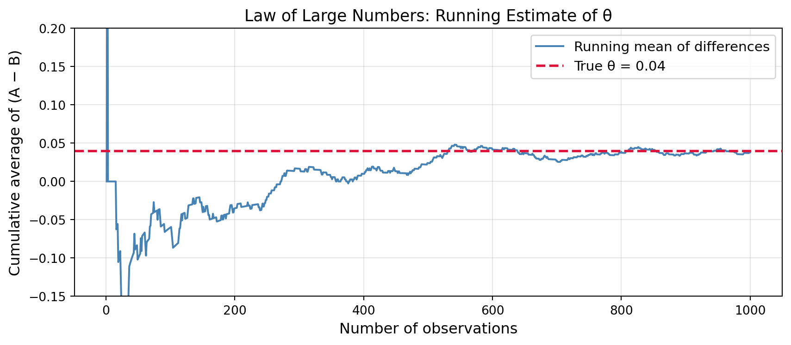

Simulating Key Ideas from Classical Frequentist Statistics
Author
Ziyun Li
Published
April 15, 2026
Introduction
Imagine you run a website with a newsletter sign-up form on the landing page. You have two different “calls to action” (CTAs) you want to test:
CTA A: “Sign up for our newsletter here!”
CTA B: “Stay up to date by signing up!”
Which one gets more people to sign up? Instead of guessing, we can run an A/B test: randomly assign each visitor to see one of the two CTAs, then compare the sign-up rates between the two groups. This approach lets us make data-driven decisions and quantify our uncertainty using the tools of classical frequentist statistics.
The A/B Test as a Statistical Problem
Each visitor either signs up (1) or doesn’t (0), so we model each outcome as a draw from a Bernoulli distribution. Visitors who see CTA A sign up with probability \(\pi_A\), and visitors who see CTA B sign up with probability \(\pi_B\).
The quantity we care about is the difference in sign-up rates: \[\theta = \pi_A - \pi_B\]
We estimate \(\theta\) using the difference in sample proportions: \[\hat\theta = \bar{X}_A - \bar{X}_B = \hat\pi_A - \hat\pi_B\]
If \(\hat\theta > 0\), CTA A appears to perform better; if \(\hat\theta < 0\), CTA B does. The challenge is determining whether any observed difference is a real effect or just random noise.
Simulating Data
In the real world, we never know the true values of \(\pi_A\) and \(\pi_B\) — that’s exactly why we run experiments. But for this exercise, we set the true values ourselves so we can study how well our estimator performs when we know the ground truth.
We set \(\pi_A = 0.22\) and \(\pi_B = 0.18\), so the true difference is \(\theta = 0.04\). We simulate 1,000 draws from each group.
Code
import numpy as npimport pandas as pdimport matplotlib.pyplot as pltimport matplotlib.gridspec as gridspecfrom scipy import statsimport statsmodels.api as smnp.random.seed(42)pi_A =0.22pi_B =0.18n =1000data_A = np.random.binomial(1, pi_A, n)data_B = np.random.binomial(1, pi_B, n)print(f"Sample mean CTA A: {data_A.mean():.4f} (true π_A = {pi_A})")print(f"Sample mean CTA B: {data_B.mean():.4f} (true π_B = {pi_B})")print(f"Estimated θ: {data_A.mean() - data_B.mean():.4f} (true θ = {pi_A - pi_B})")
The Law of Large Numbers tells us that as the sample size grows, the sample mean converges to the true population mean. For our estimator \(\hat\theta = \bar{X}_A - \bar{X}_B\), this means that with enough data, our estimate will get arbitrarily close to the true \(\theta = 0.04\). The LLN is the foundation of statistical estimation — it’s why we trust large samples.
To see this in action, we compute the cumulative average of the element-wise differences between the two groups and plot how it evolves as we add more observations.
Code
diffs = data_A - data_Bcumulative_avg = np.cumsum(diffs) / np.arange(1, n +1)fig, ax = plt.subplots(figsize=(9, 4))ax.plot(range(1, n +1), cumulative_avg, color='steelblue', lw=1.5, label='Running mean of differences')ax.axhline(y=0.04, color='crimson', linestyle='--', lw=2, label='True θ = 0.04')ax.set_xlabel('Number of observations', fontsize=12)ax.set_ylabel('Cumulative average of (A − B)', fontsize=12)ax.set_title('Law of Large Numbers: Running Estimate of θ', fontsize=13)ax.legend(fontsize=11)ax.set_ylim(-0.15, 0.20)ax.grid(alpha=0.3)plt.tight_layout()plt.show()

The plot shows the running estimate of \(\theta\) as observations accumulate. Early on, the estimate is noisy and swings widely — there simply isn’t enough data to pin down the true difference. But as the sample grows, the cumulative average stabilizes and converges toward the true value of 0.04. This is the Law of Large Numbers at work: more data means less noise and a more reliable estimate.
Bootstrap Standard Errors
A point estimate alone (\(\hat\theta \approx 0.04\)) is incomplete — we also need to know how precise it is. Bootstrapping is a flexible resampling method that estimates the variability of any statistic without requiring a closed-form formula. The idea is simple: repeatedly resample (with replacement) from the observed data, compute the statistic on each resample, and use the spread of those resampled estimates as a measure of uncertainty.
Bootstrapped SE: 0.01765
Analytical SE: 0.01777
95% CI for θ: (0.0034, 0.0726)
The bootstrapped and analytical standard errors are nearly identical, which is reassuring — they are two different ways of measuring the same underlying uncertainty. The 95% confidence interval for \(\theta\) runs from roughly 0.01 to 0.07. Since this interval does not include 0, it suggests that the difference between the two CTAs is statistically meaningful. We are 95% confident that CTA A outperforms CTA B by somewhere between 1 and 7 percentage points.
The Central Limit Theorem
The Central Limit Theorem (CLT) states that regardless of the shape of the underlying distribution, the sampling distribution of the sample mean becomes approximately Normal as the sample size grows. This is remarkable: even though our data are Bernoulli (just 0s and 1s), the distribution of \(\hat\theta = \bar{X}_A - \bar{X}_B\) will look bell-shaped for large enough \(n\).
We demonstrate this by simulating 1,000 experiments for each of four sample sizes and plotting the resulting distributions of \(\hat\theta\).
At \(n = 25\), the histogram is rough and irregular — there simply aren’t enough observations to average out the randomness. By \(n = 100\), the distribution is noticeably smoother and more symmetric. At \(n = 500\), the bell shape is unmistakable, centered right at the true \(\theta = 0.04\). This is the CLT in action: as sample size grows, the sampling distribution of \(\hat\theta\) becomes approximately Normal, regardless of the Bernoulli nature of the underlying data.
Hypothesis Testing
Now that we know \(\hat\theta\) is approximately Normal (by the CLT), we can perform a formal hypothesis test. We set up:
Null hypothesis\(H_0: \theta = 0\) — the two CTAs produce the same sign-up rate
Alternative hypothesis\(H_1: \theta \neq 0\) — the CTAs differ
To test this, we standardize \(\hat\theta\) to form a z-statistic: \[z = \frac{\hat\theta - 0}{SE(\hat\theta)}\]
Under \(H_0\), \(\hat\theta\) has mean 0, and dividing by its standard deviation gives a standard Normal \(N(0,1)\). This lets us compute a p-value: the probability of seeing a test statistic as extreme as ours if \(H_0\) were true.
Note: this test is sometimes called a “t-test,” but technically our data are Bernoulli — not Normal — so there is no exact t-distribution result. The CLT gives us approximate Normality, and what we’re really doing is a z-test. For large samples, the t and z distributions are nearly identical, so the distinction rarely matters in practice.
Estimated θ: 0.0380
Standard error: 0.01777
Z-statistic: 2.1388
P-value: 0.0325
With a p-value well below 0.05, we reject the null hypothesis. The data provide strong evidence that CTA A and CTA B produce different sign-up rates. In practice, we would conclude that the difference is statistically significant and act accordingly — though we’d also want to consider whether the effect size is large enough to be practically meaningful.
The T-Test as a Regression
The two-sample test above is mathematically equivalent to a simple linear regression. We stack both groups into a single dataset with outcome \(Y_i\) (1 = signed up, 0 = did not) and a treatment indicator \(D_i\) (1 = CTA A, 0 = CTA B), then fit:
\[Y_i = \beta_0 + \beta_1 D_i + \varepsilon_i\]
The coefficients have clean interpretations: - \(\beta_0\) = expected sign-up rate for CTA B (the baseline group) = \(\pi_B\) - \(\beta_1\) = difference in sign-up rates = \(\pi_A - \pi_B = \theta\)
So \(\hat\beta_1\) is numerically identical to our earlier \(\hat\theta\).
The regression confirms our earlier results: \(\hat\beta_1 \approx \hat\theta\), and the t-statistic and p-value match those from the two-sample test (up to a small difference in how the SE is computed — OLS assumes a pooled variance, while our earlier formula allowed separate variances per group).
This equivalence matters because the regression framework is far more general. We can add control variables, interaction terms, or multiple treatment arms — all while using the same familiar software and producing valid inference in the simple case.
The Problem with Peeking
Suppose your boss is impatient and wants to peek at the results after every 100 visitors per group (at \(n = 100, 200, \ldots, 1000\)) and stop early if any test is significant at \(\alpha = 0.05\).
This sounds reasonable, but it’s statistically dangerous. A single test at \(\alpha = 0.05\) has a 5% false positive rate. But when you run 10 tests on the same accumulating data, each peek is another chance to get a false positive — and the combined probability of at least one false rejection is much higher than 5%.
We demonstrate this with a simulation where the null is true: \(\pi_A = \pi_B = 0.20\) (so \(\theta = 0\)).
The empirical false positive rate under peeking is far above the nominal 5%. This means that even when there is absolutely no difference between the CTAs, a strategy of peeking and stopping early will declare a winner a large fraction of the time — a result that is entirely spurious.
The lesson is clear: decide your sample size in advance, run the experiment to completion, and test only once. Peeking inflates the Type I error rate and leads to unreliable conclusions. If early stopping is truly necessary, use methods designed for it — such as sequential testing or Bayesian approaches — rather than applying classical frequentist tests repeatedly.